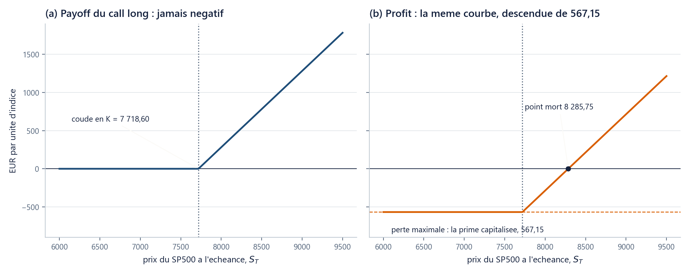
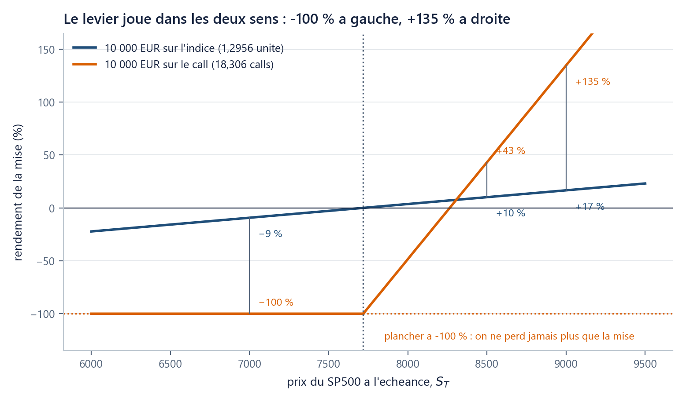

Où suis-je ? unité 5 sur 5
Les unités du chapitre
- 01Un prix n'est pas un rendement20 min
- 02La volatilité mesure l'écart au centre35 min
- 03Diversifier, ce n'est pas moyenner25 min
- 04Un euro demain ne vaut…20 min
- 05Une option, c'est d'abord un…25 min
Dans cette unité
Les objets de la finance qu'on peut observer
Une option, c’est d’abord un besoin qu’on dessine
Le dessin du besoin suffit à donner point mort, parité et bornes, sans aucun modèle du futur.
Durée : 25 min · Prérequis : u04 (actualisation, capitalisation), u01 (prix et rendement), ch00 u05 (fonctions, assert), ch00 u06 (np.maximum).
1. La question
Vous gérez 100 000 € indexés sur le S&P 500, qui cote 7 718,60. Vous voulez garder la hausse, mais ne pas perdre plus de 10 % sur un an. (Le portefeuille du cours a six lignes ; cette unité raisonne comme s'il suivait exactement l'indice, le couvrir ligne à ligne est le sujet du ch08.)
Prenez une feuille. En abscisse, le niveau du S&P 500 dans un an, de 5 000 à 10 000 ; en ordonnée, ce que vous voudriez recevoir en euros, en plus de votre portefeuille. Un point pour commencer : à 6 000, vous avez perdu 22 % et vouliez vous arrêter à −10 %, donc combien faut-il vous verser ? Recommencez à 7 000, 8 000, 9 000, et reliez. Ne cherchez pas le nom du produit ; la réponse est au §8.
2. On essaie d’abord
Gardez votre dessin et écrivez une seconde réponse : je paie 546,28 le droit d'acheter une unité de S&P 500 à 7 718,60 dans un an. À partir de quel niveau est-ce que je gagne ?
3. Trois scénarios, deux flux
Un contrat, trois cas. Il donne le droit d'acheter une unité de S&P 500 à 7 718,60 dans un an (le droit, pas l'obligation) et coûte 546,28 aujourd'hui.
| Dans un an, le S&P 500 vaut | 6 800 | 7 718,60 | 8 500 |
|---|---|---|---|
| J'exerce mon droit ? | non | indifférent | oui |
| Ce que le contrat me verse | 0 | 0 | 781,40 |
À 6 800, acheter à 7 718,60 serait absurde : on n'exerce pas, le contrat verse 0. À 8 500, on achète 8 500 pour 7 718,60 : il verse la différence, 781,40.
Deux flux, deux dates : −546,28 aujourd'hui, +781,40 ou rien dans un an. Le vocabulaire :
- le sous-jacent, l'actif sur lequel porte le contrat, ici le S&P 500 ;
- l'échéance T, la date où le droit s'éteint, ici T = 1 an ;
- le prix d'exercice K, le prix fixé d'avance, ici 7 718,60 ;
- la prime, ce que l'acheteur paie aujourd'hui, ici 546,28 ;
- un call, le droit d'acheter à K ; un put, celui de vendre à K ;
- la position longue, celle de l'acheteur ; la courte, celle du vendeur, aux flux opposés.
D'où vient 546,28 ? C'est la prime de référence du cours, une donnée comme S_0 ou r. Ce chapitre n'a pas les outils pour l'expliquer et ne fera pas semblant : le chapitre 3 dira d'où elle vient.
Formule : le payoff d'un call. h(S_T) = \max(S_T - K,\ 0) S_T : prix du sous-jacent à l'échéance · K : prix d'exercice · h : le payoff, ce que le contrat verse à l'échéance, sans tenir compte de ce qu'il a coûté. En numpy :
np.maximum(S - K, 0), la fonction fourniepayoff_call(S, K). Payoff du put : \max(K - S_T,\ 0).
4. Le tableau à huit cases
Quatre positions, trois scénarios. D'abord les payoffs :
| Position | S_T = 6\,800 | S_T = 7\,718{,}60 | S_T = 8\,500 |
|---|---|---|---|
| call long | 0 | 0 | +781,40 |
| call court | 0 | 0 | −781,40 |
| put long | +918,60 | 0 | 0 |
| put court | −918,60 | 0 | 0 |
| somme des quatre | 0 | 0 | 0 |
La dernière ligne est le contrôle le plus utile : la somme des quatre payoffs est nulle dans chaque colonne. Ce qu'un acheteur reçoit, un vendeur le verse ; le contrat ne crée rien.
5. Payoff n’est pas profit, et le point mort n’est pas K + prime
Le payoff ignore la prime, le profit non. La prime est payée aujourd'hui, le payoff reçu dans un an : u04 dit comment comparer deux dates. Prime capitalisée : 546{,}28 \times e^{0{,}0375} = \mathbf{567{,}15}.
| Position | S_T = 6\,800 | S_T = 7\,718{,}60 | S_T = 8\,500 |
|---|---|---|---|
| profit du call long | −567,15 | −567,15 | +214,25 |
| profit du put long | +646,39 | −272,21 | −272,21 |
Le point mort, le niveau où le profit devient positif, vaut donc K + 567{,}15 = \mathbf{8\,285{,}75}, soit 7,35 % au-dessus du cours. Le calcul spontané, K + 546{,}28 = 8\,264{,}88, se trompe de 20,87 points : il oublie que la prime aurait pu être placée un an. Point mort du put long : K - 272{,}21 = \mathbf{7\,446{,}39}.

6. Deux résultats sans modèle, obtenus en comparant des tableaux
Un. Le put de mêmes K et T est affiché à 262,19. Alors C - P = \mathbf{284{,}0876} et S_0 - K e^{-rT} = \mathbf{284{,}0876} : le même nombre, à la quatrième décimale.
Cela se voit sans calcul : « acheter le call et vendre le put » verse S_T - K dans tous les scénarios (vérifiez-le au §4), et « détenir une unité d'indice en devant K à l'échéance » aussi. Deux paquets de flux identiques partout ne peuvent pas avoir deux prix : sinon on achèterait le moins cher, vendrait l'autre, et empocherait la différence sans rien devoir. C'est l'absence d'opportunité d'arbitrage (AOA), d'où la parité call-put :
Deux. Le même raisonnement encadre les deux prix sans rien supposer : \max(S_0 - Ke^{-rT},\ 0) \le C \le S_0, soit 284,09 ≤ 546,28 ≤ 7 718,60 (un droit d'acheter ne vaut pas plus que ce qu'il permet d'acheter), et \max(Ke^{-rT} - S_0,\ 0) \le P \le Ke^{-rT}, soit 0 ≤ 262,19 ≤ 7 434,51.
7. Le levier, chiffré
Mise de 10 000 € : sur l'indice elle achète 1,2956 unité, sur le call 18,306 contrats. À S_T = 7\,000, cela fait −9,3 % contre −100 % ; à 8 500, +10,1 % contre +43,0 % ; à 9 000, +16,6 % contre +134,6 %. (Ces pourcentages ne capitalisent pas la mise, convention du levier : d'où la courbe rouge qui coupe le zéro en 8 264,88, non au point mort 8 285,75.)

C'est là que se corrige l'idée reçue « une option, c'est un pari ». Côté acheteur, la perte est bornée à la prime, ce que ne garantit pas une vente à découvert, c'est-à-dire vendre un titre qu'on ne détient pas : si le cours monte, la perte n'a aucun plafond. Un contrat peut réduire un risque autant qu'en prendre.
8. Retour à votre dessin
Ce que vous avez dessiné au §1 (rien tant que le marché tient, de quoi combler le trou s'il tombe sous 90 %) est un put de prix d'exercice 0{,}90 \times 7\,718{,}60 = 6\,946{,}74, affiché à 61,67 par unité d'indice, soit 0,80 % de S_0. Couvrir 100 000 € demande 12,956 unités, soit 799 € pour ne pas perdre plus de 10 % en un an : une prime d'assurance, au coût connu d'avance.
Trois mots pour finir. La valeur intrinsèque est ce que l'option rapporterait si l'échéance était aujourd'hui : \max(7\,718{,}60 - 7\,718{,}60, 0) = 0. La valeur temps est tout le reste : 546,28, la totalité. L'option est à la monnaie quand S = K, dans la monnaie si l'exercer maintenant rapporterait quelque chose, en dehors sinon.
import sys; sys.path.insert(0, "..")
import numpy as np
from mcdp_utils import payoff_call, payoff_put
S0 = K = 7718.60
r, T, prime_call, prime_put = 0.0375, 1.0, 546.2794, 262.1918
scenarios = np.array([6800.0, 7718.60, 8500.0])
huit_cases = [payoff_call(scenarios, K), -payoff_call(scenarios, K),
payoff_put(scenarios, K), -payoff_put(scenarios, K)]
assert np.allclose(sum(huit_cases), 0.0) # somme nulle par colonne
point_mort = K + prime_call * np.exp(r * T) # 8285.75
assert abs((prime_call - prime_put) - (S0 - K * np.exp(-r * T))) < 1e-3
print(round(point_mort, 2), round(payoff_put(6800.0, K), 2)) # -> 8285.75 918.6
payoff_call(scenarios, K) traite les trois scénarios d'un coup : la vectorisation de ch00 u06. huit_cases range les quatre positions, le signe moins fabriquant les courtes ; np.allclose vérifie que leur somme est nulle, et le second assert est la parité, en test relançable.
9. Vérifiez-vous
- (★) K = 7\,718{,}60, prime 546,28, S_T = 8\,000. Payoff ? Profit ? Exerce-t-on ?
- (★★★) On vous propose le put à 200 au lieu de 262,19, les autres prix inchangés. Que faites-vous ? (Indice : la parité impose C - P = 284{,}09, ici 346,28. Le paquet trop cher se vend, l'autre s'achète ; emprunter Ke^{-rT}, c'est devoir exactement K dans un an.)
- (★★, retour sur u04) Pourquoi le point mort est-il 8 285,75 et non 8 264,88 ?
- (★, retour sur ch00 u06) Écrivez en une ligne le payoff d'un put sur un tableau
Sde prix d'échéance.
Réponses
10. Ce que vous savez faire maintenant
- Remplir un tableau de payoff à huit cases, le contrôler par la somme nulle par colonne, en déduire le profit.
- Calculer un point mort avec la prime capitalisée, et dire pourquoi elle n'entre pas dans la décision d'exercice.
- Vérifier parité et bornes, du call comme du put, sans aucun modèle.
Chapitre suivant. Tout ce chapitre s'est passé sans un seul énoncé sur les chances que quelque chose arrive, et un nombre y a pourtant été posé sans explication : la prime de 546,28. Aucun objet observable ne la produit ; pour la fabriquer, il faut mesurer ce qui n'est pas encore arrivé. C'est le chapitre 2 : le hasard comme outil de calcul.
Sources. S. Lovo, Financial Markets, 4: Options, HEC Paris, 2021, https://people.hec.edu/lovo/wp-content/uploads/sites/28/2021/11/FM21_4_optionsSL.pdf, licence non déclarée : structure imitée, chiffres refaits · A. W. Lo, MIT OCW 15.401, 2008, lecture 10, https://ocw.mit.edu/courses/15-401-finance-theory-i-fall-2008/c40ecc0cc0dce0fbf2d229bc4027c43b_MIT15_401F08_lec10.pdf, CC BY-NC-SA 4.0 · Cboe, Debunking Options Myths, 2024, https://www.cboe.com/insights/posts/debunking-options-myths/, juge et partie.